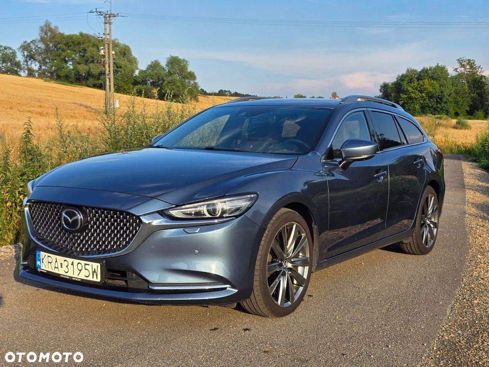
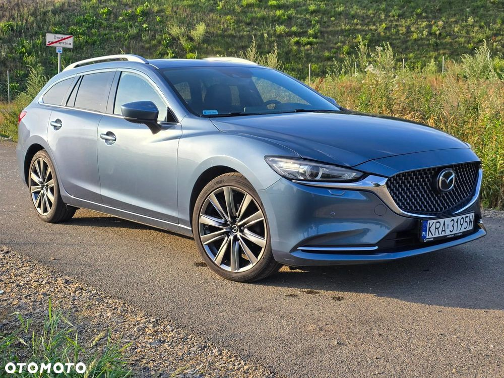
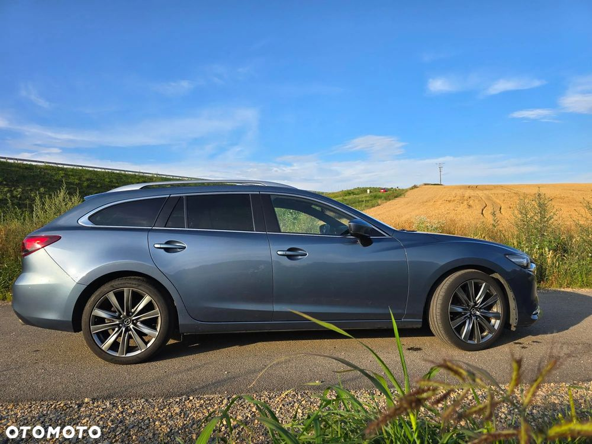
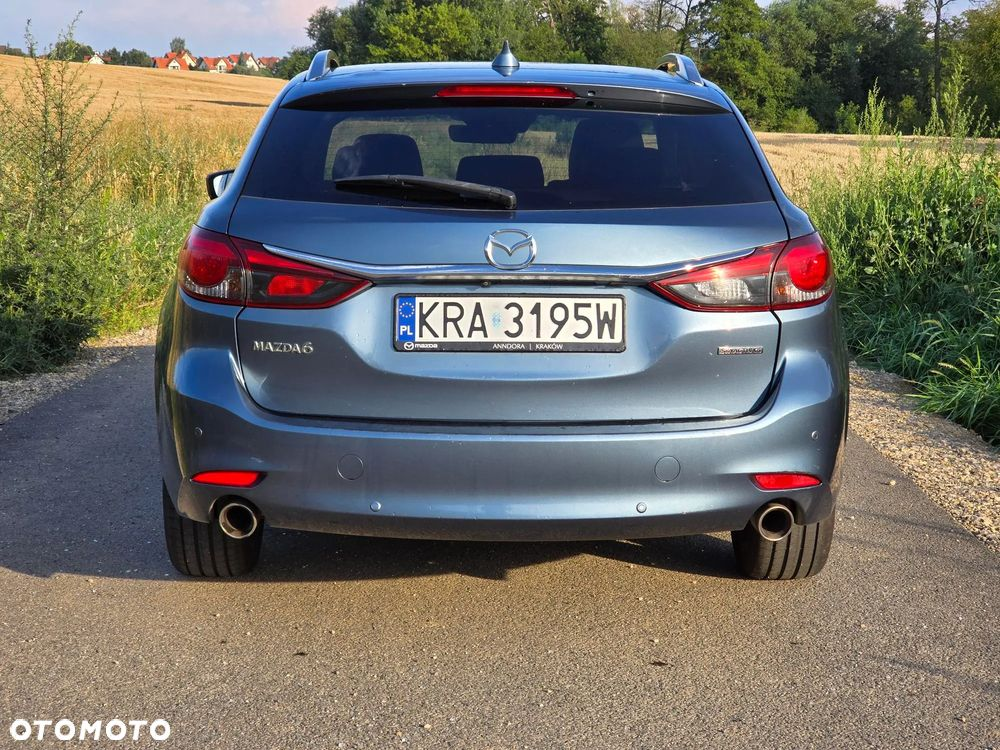
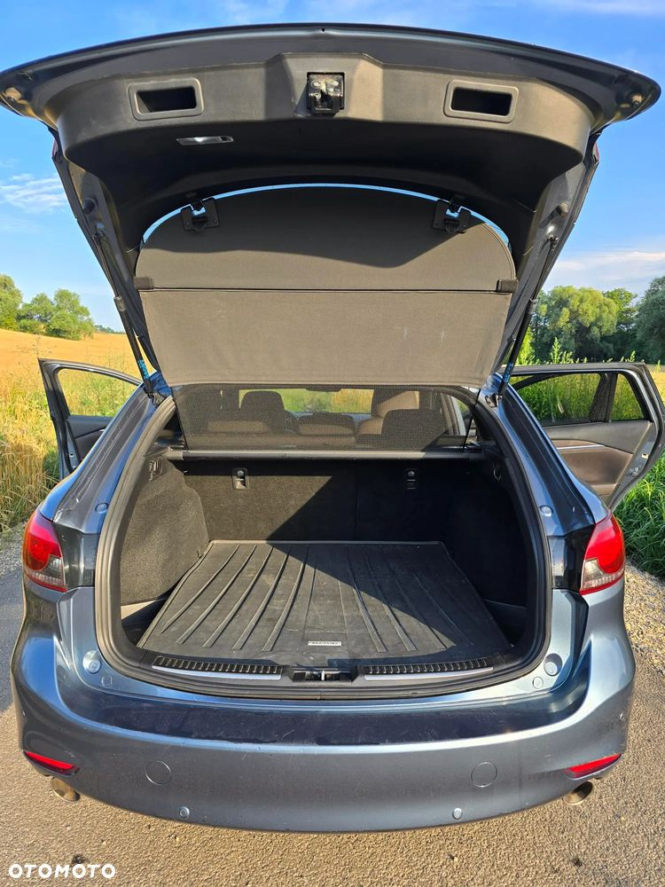
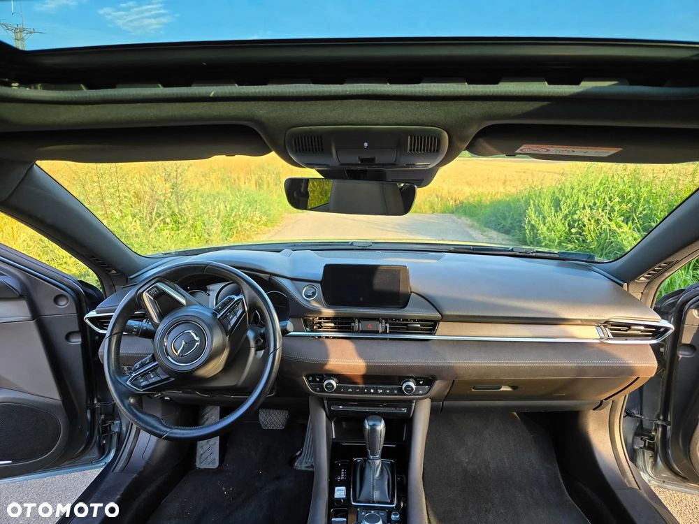
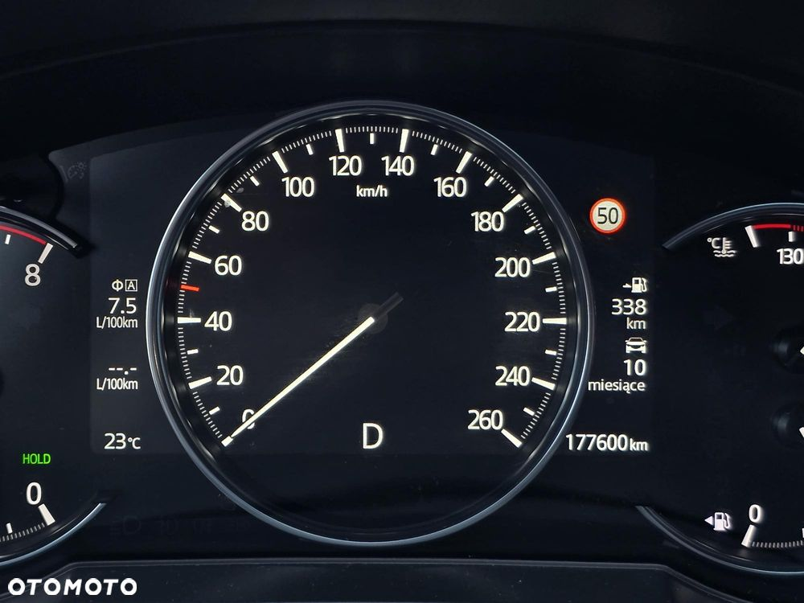
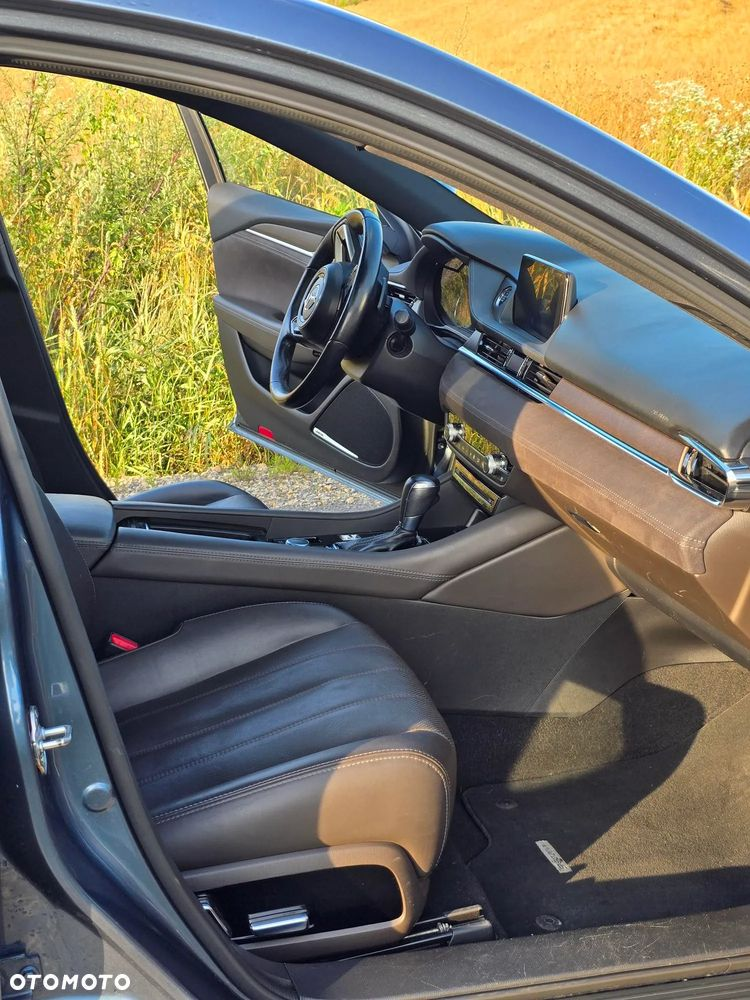
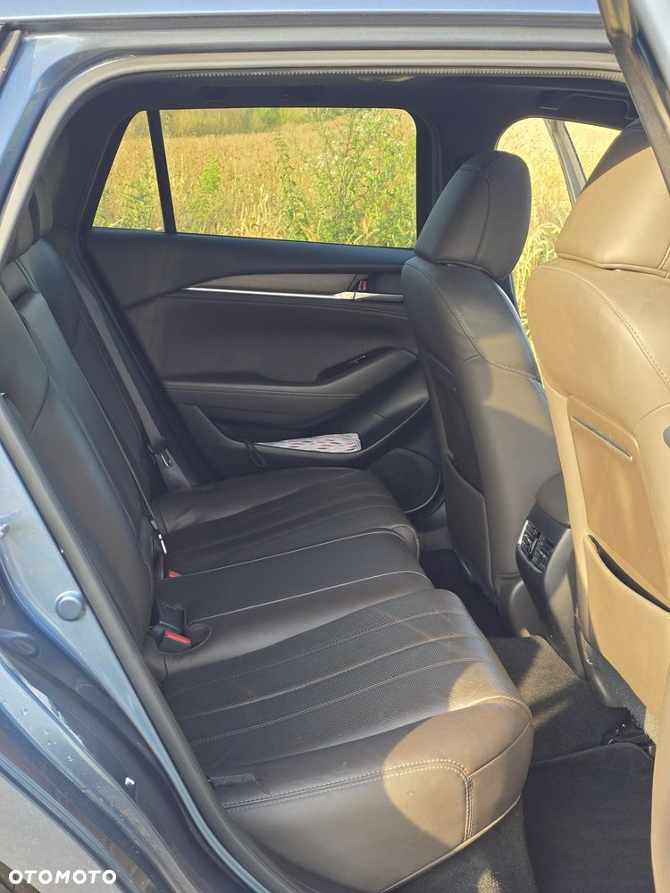

Sprzedajemy naszą Mazdę 6 kombi w najwyższej wersji wyposażenia SkyDream, silnik 2,5 l - 194 KM. Mazdę kupiliśmy jako roczny samochód od autoryzowanego dealera Mazda Odyssey w Warszawie. Szukaliśmy wtedy właśnie takiej 6, bo oprócz tego, że świetnie wygląda, to wcześniej też jeździliśmy Mazdą 6 i bardzo dobrze wspominaliśmy jej niezawodność.
Tak było również w przypadku Mazdy, którą teraz sprzedajemy. Samochód co do zasady okazał się niezawodny. Jedyna usterka dotyczyła skrzyni biegów, która przy przebiegu około 60 tys. km i w ramach gwarancji producenta została wymieniona na nową. Poza tym samochód nie sprawiał żadnych problemów technicznych ani nie wymagał żadnych niestandardowych napraw. Ostatnio wymieniliśmy natomiast katalizator, który wykazywał ślady zużycia i olej w skrzyni biegów, zgodnie z zaleceniami producenta. Kolejny przegląd eksploatacyjny przypada za ok. 8 miesięcy.
Mazda jest regularnie serwisowana w ASO Mazda w Krakowie, a historia obsługi i napraw dostępna jest w aplikacji Mazda i może zostać udostępniona zainteresowanemu kupującemu.
Mazda jest bezwypadkowa. Po kontakcie z bramą własnej posesji konieczna była naprawa blacharsko-lakierniczą w celu usunięcia przetarcia na prawych tylnych drzwiach. Naprawa i lakierowanie zostały wykonane w ASO Mazda w Krakowie.
Mazda nosi normalne ślady użytkowania adekwatne do wieku i przebiegu, ale jej stan techniczny i wizualny oceniam jako bardzo dobry. Podczas ostatniego przeglądu w ASO nie stwierdzono ognisk korozji.
Mazda była wykorzystywane głównie w trasach pozamiejskich, związanych z codziennymi dojazdami do pracy z Krakowa poza Kraków.
Mazda ma dwa komplety opon: letnie: Goodyear Eagle F1 Asymmetric 6 - kupione w kwietniu 2025 r., zimowe Michelin Pilot Alpin 5 - kupione w październiku 2024 r.
Mazda 6 kombi jest przestronna, komfortowa, cicha i ponadczasowo elegancka. Świetna dla rodziny, z dużym bagażnikiem. Wersja SkyDream ma natomiast praktycznie pełne wyposażenie, w tym między innymi:
• skórzaną tapicerkę,
• fotele ogrzewane i wentylowane (z przodu), podgrzewaną kierownicę,
• adaptacyjne reflektory LED,
• aktywny tempomat,
• kamerę cofania i czujniki parkowania,
• kompletne systemy bezpieczeństwa, nie wymieniam, można sprawdzić w internecie,
• szyberdach,
• system nagłośnienia Bose,
• duże felgi aluminiowe (opony 225/45 R19).
Samochód sprzedajemy z uwagi na wymianę na inny.
Proszę o kontakt, chętnie odpowiem na wszelkie pytania.
Marcin








